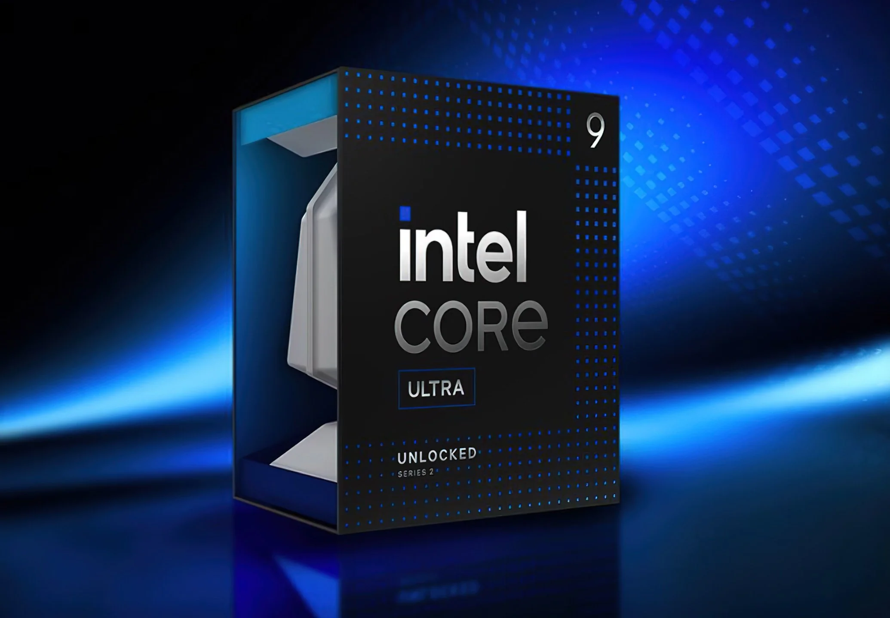

Intel lanza procesadores Core Ultra 9
Intel ha lanzado su nueva línea de procesadores Core Ultra 9, diseñados para gaming y edición de video. Los chips ofrecen un salto significativo en eficiencia energética y rendimiento.
Mejoras de rendimiento
Los nuevos procesadores cuentan con 16 núcleos y un consumo energético optimizado, ideal para creadores de contenido...
Disponibilidad
Estarán disponibles en el mercado a partir de junio de 2025.